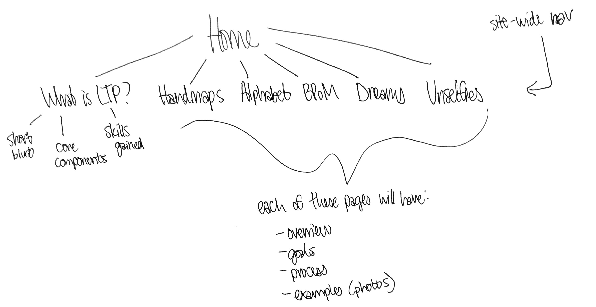
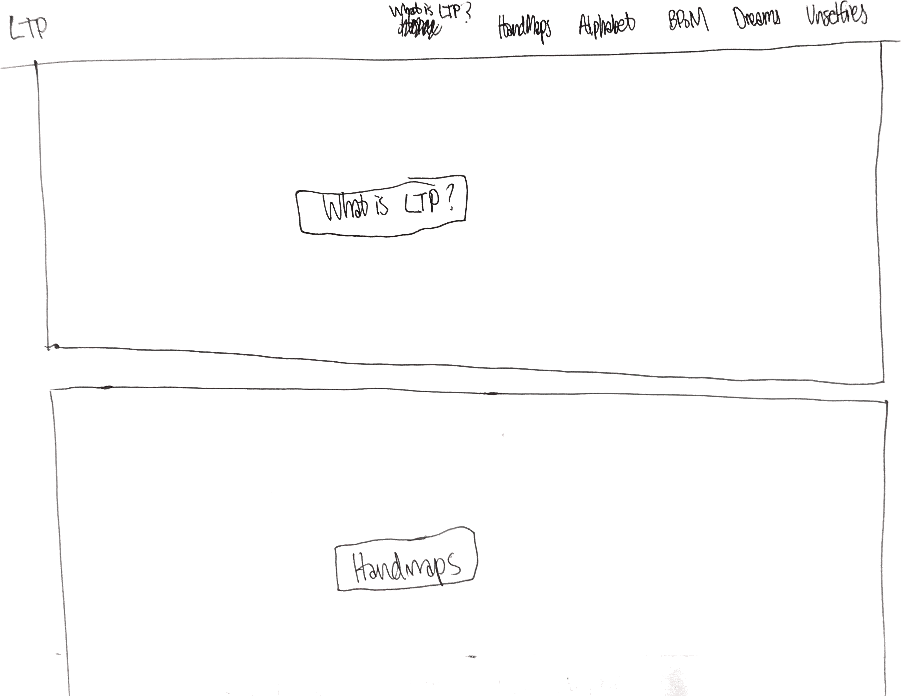
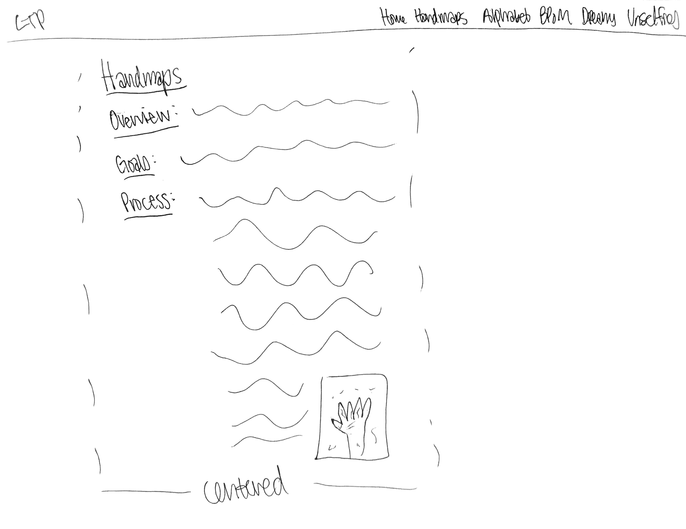
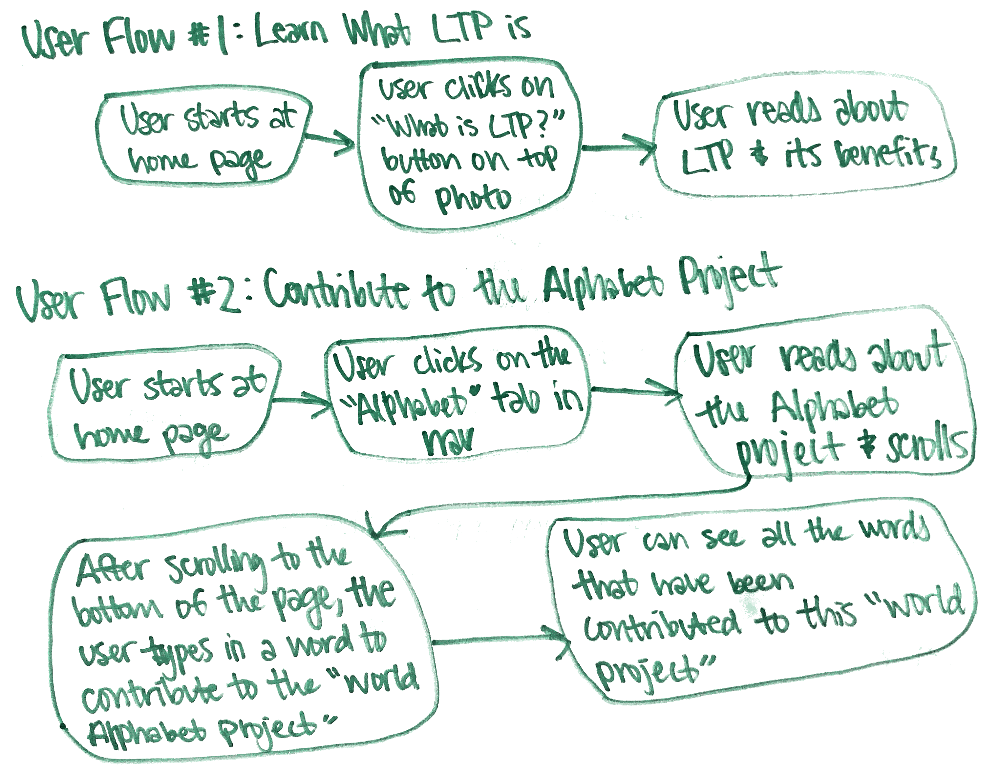

Final Project Proposal
Description and Rationale
What and Why:
For my final project, I will build a website that showcases my
experience with Literacy Through Photography (LTP). LTP is a
student-centered teaching methodology that focuses on participation
creativity, and critical thinking. I was first introduced to LTP the
summer after my first year of college, when I participated in DukeEngage
– Tanzania LTP. Through that program, I taught LTP lessons in more than
ten schools in Tanzania. This semester, I have taught LTP lessons in two
schools in Durham. I want to build a website about my experiences with
LTP because I am passionate about this teaching methodology, and it has
taught me a lot. I want to share with other people what LTP is and how
it can be used in classrooms.
Target Audience:
My target audience will be teachers and students, as well as anyone
interested in learning more about LTP. As I mentioned, LTP goes beyond
textbook knowledge and allows students to practice collaboration,
critical thinking, and other soft skills that are important in any
career.
User Takeaways:
By visiting this site, viewers will learn about what LTP is, various
LTP activities, and the benefits of LTP both in and out of the
classroom.
Inspiration for the...
Genre:
Past DukeEngage students have created a
WordPress site
that showcases blogs written by LTP students. Duke’s Center for
Documentary Studies also has a
page
that explains LTP. I plan to draw inspiration for content from these
sites to explain what LTP is and how to do some of the most popular LTP
projects.
Organization and Design:
I like the navigation and layout of
this website
because it conveys a lot with minimal words. Also, the simplicity
makes the user flow easy to understand. I will look to this website
for inspiration on the organization and design for my website. I plan
to use a similar style of having a photo with a transparent button
over it on the LTP home page.
User Experience:
To enhance the user experience of my website, I will attempt to shrink
the photos as the user scrolls, similar to how
this website
does. This will draw attention to the photo, while also allowing the
viewer to focus on the content of the lessons. Shrinking the photo
allows for the shift in attention.
Information Architecture

Design Style Guide
Home Page Wireframe:

Project Page Wireframe:

Color Palette:
I plan to use a white background. The text on the photos for the
buttons will also be white. I will use both of the darker greens from
this color palette
for other text on the page.
Typography:
I will use
the Sarabun font, a simple, sans-serif font, for my website.
Media Elements
Media Needed:
For this website, I will need at least one photo example from each
project that I will showcase on the site. I also would like to include a
video about LTP. Finally, I plan to add in animations by creating
keyframe animations, but I will determine where these animations should
be in the site later in the process.
Media Sources:
I have several photo examples of LTP work from my time in Arusha,
Tanzania as well as in Durham. If I need more examples, I can ask the
professor who teaches LTP at Duke to see if she has other
photos/videos I can use for this site. THe professor has a collection
of over 20 years of LTP work, and I would love to include some of the
older work as well.
Ensuring Usage Rights:
I will discuss with the LTP professor to determine if I can use the
photos and videos about LTP. If there are any that I cannot use for
this website, I will try to find other examples or come up with my
own.
Interactive Experiences
User Flows:

Timeline of Milestones
Nov 4, 2019:
Complete electronic wireframes
Nov 11, 2019:
Gather LTP content (images, videos, text)
Nov 18, 2019:
Complete the navigation and home page
Nov 25, 2019:
Complete all project pages
Dec 2, 2019:
Complete animations; complete the option for users to contribute to
each project in some manner (for example, the user might add a word to
the alphabet for the Alphabet Project); begin asking for feedback
Dec 9, 2019:
Gather and incorporate feedback to improve the website
Criteria for Success
Project Goals:
The website should be easy to navigate and have a clear user flow. The
site should be aesthetically pleasing. The site should be consistent
across pages. Finally, users interacting with the site should be able to
learn something about LTP after viewing the website.
Project Reach Goals:
One reach goal I have is to incorporate a "world project" for each of
the LTP projects that I explain. For each "world project," users would
be able to contribute to the project in some manner, and the website
would showcase everyone's contribution to the project. Another reach
goal I have for this project is to add a game or visualization of some
sort that explains at least one of the projects further.